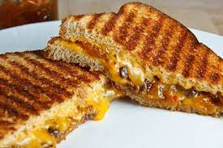

Cheese and Chutey Toastie

Description
Quisque hendrerit tincidunt quam, vitae malesuada elit pulvinar sit amet. Quisque vitae maximus justo. Fusce convallis libero non pharetra accumsan. Praesent non tincidunt magna. Morbi et sapien scelerisque, pulvinar mi in, ultrices neque. Ut posuere neque vel rhoncus tempus. Vestibulum sagittis, odio at blandit molestie, mauris mauris euismod lacus, et faucibus odio risus sed odio.
Ingredients
- White or brown bread
- Cheddar cheese
- Chutney
- Butter
Steps
- Pre head toastie maker
- Butter bread
- Cut slices of cheddar cheese and place on buttered
peice of bread
- Use a spoon to spread some chutney on the cheese
- Place toastie in the toastie maker and cook until
the cheese has melted and the bread has started to go
golden brown